Step-by-step reference for the full service lifecycle: from CRM opportunity intake through quotation, sale order, repair/work order, and invoice draft.
This document walks the MES Head (Supervisor role) through the complete end-to-end workflow for a new client service request. Screenshots are taken from a live Odoo 18 instance.
meshead@chem.ubc.caNavigate to the Odoo login page and authenticate with the Supervisor account.
meshead@chem.ubc.ca and the assigned password, then click Log In.The Supervisor role grants access to CRM, Sales, Repairs, Timesheets, and Invoicing views. Settings and inventory product creation are restricted to the Manager role.
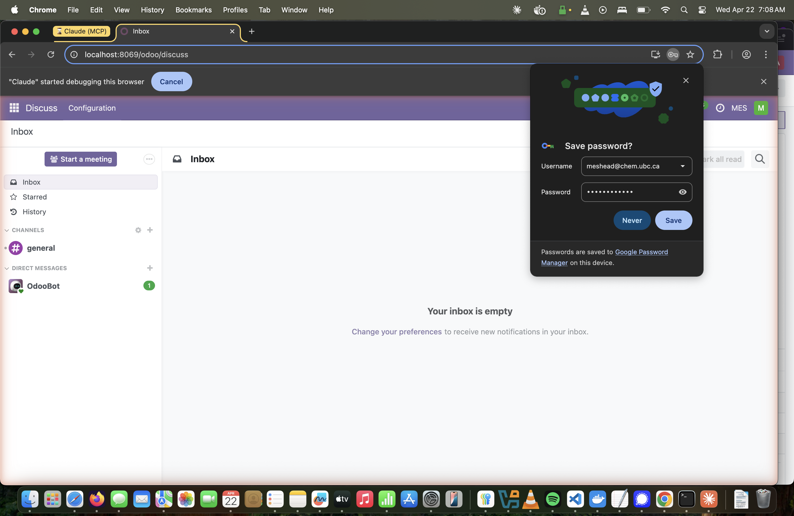
Navigate to the CRM module to view and manage service opportunities.
/odoo/crm.Switch to List view (icon top-right) for a faster overview when managing many opportunities at once.
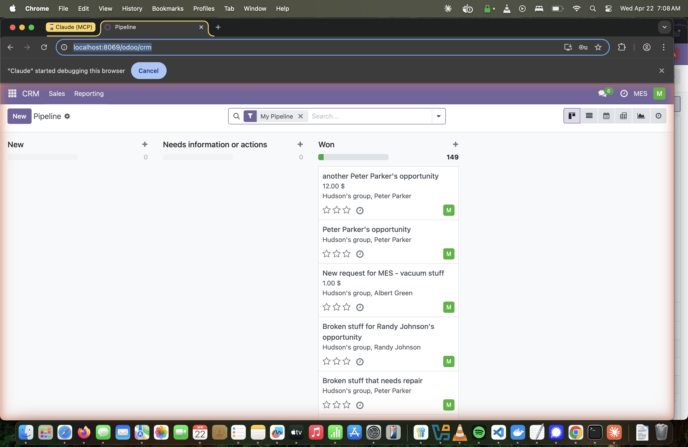
Open the full opportunity form, create a new client contact, and record intake details as internal notes.
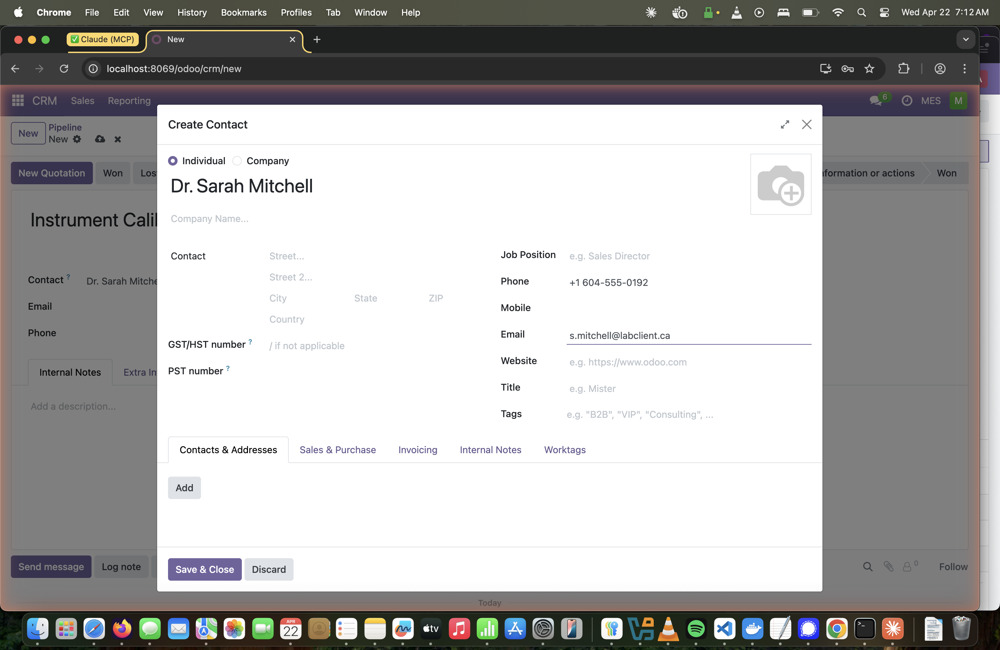
Internal Notes are private — they are visible only to Odoo users, not to the client. Use the Send message button at the bottom for client-facing communication.
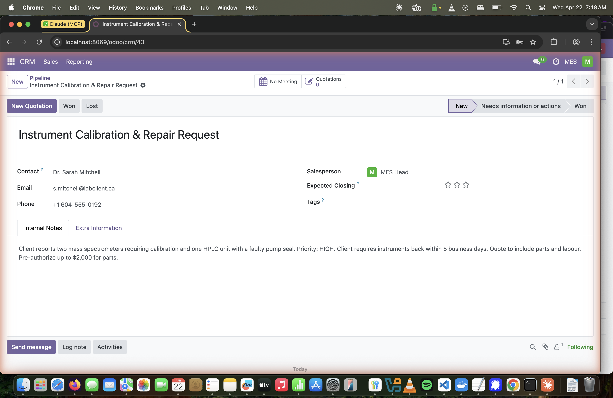
Generate a quotation directly from the opportunity using the New Quotation button.
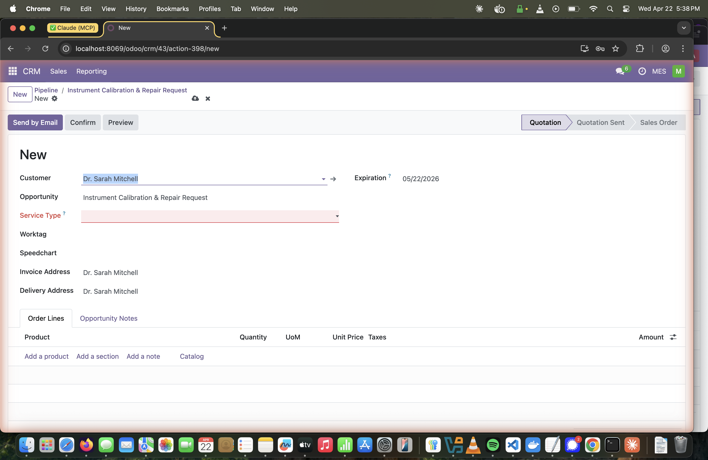
Select the appropriate service classification and billing worktag, then add the labor order line.
Click the Service Type dropdown and choose the category that best describes the work:
| Option | When to use |
|---|---|
| Repair | Fixing or restoring a faulty instrument |
| Manufacturing | Building or fabricating a component |
| Move | Relocating equipment between labs |
| Installation | Setting up new equipment on-site |
| Maintenance | Scheduled preventive maintenance |
CALREP-2026-001).No worktags showing? The worktag's Company field must be set to the customer's commercial partner. If the customer is an individual with no parent company, the worktag's Company should match that individual's partner record. Ask the Manager to create the worktag if none exist.
Click Add a product in the Order Lines tab and select the appropriate labor product. There are four labor products — choose based on client category:
| Product | Client Category |
|---|---|
| Work order / repair order for Chemistry client – Labor | UBC Chemistry department |
| Work order / repair order for UBC (external) client – Labor | Other UBC departments |
| Work order / repair order for External to UBC or private client – Labor | Non-UBC / private clients |
| Work order / repair order for Departmental service client – Labor | Internal MES department service |
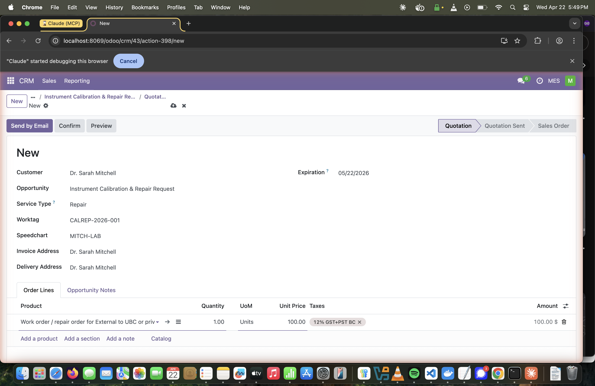
Confirm the quotation to lock in pricing and generate the sales order and linked repair order.
Once confirmed, the order date and pricing are locked. To make changes, cancel and recreate, or use the Lock/Unlock controls visible to managers.
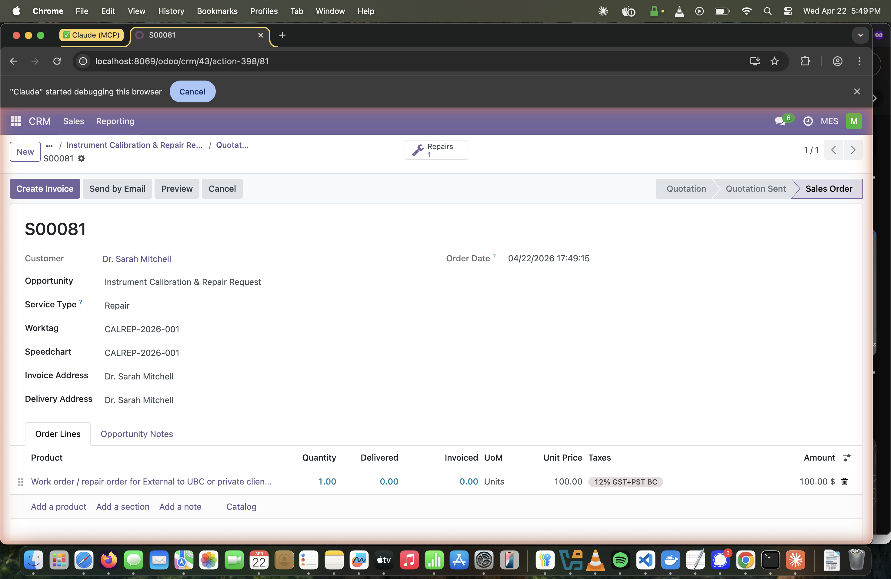
Access the auto-created repair order and review its details before assigning it to a technician.
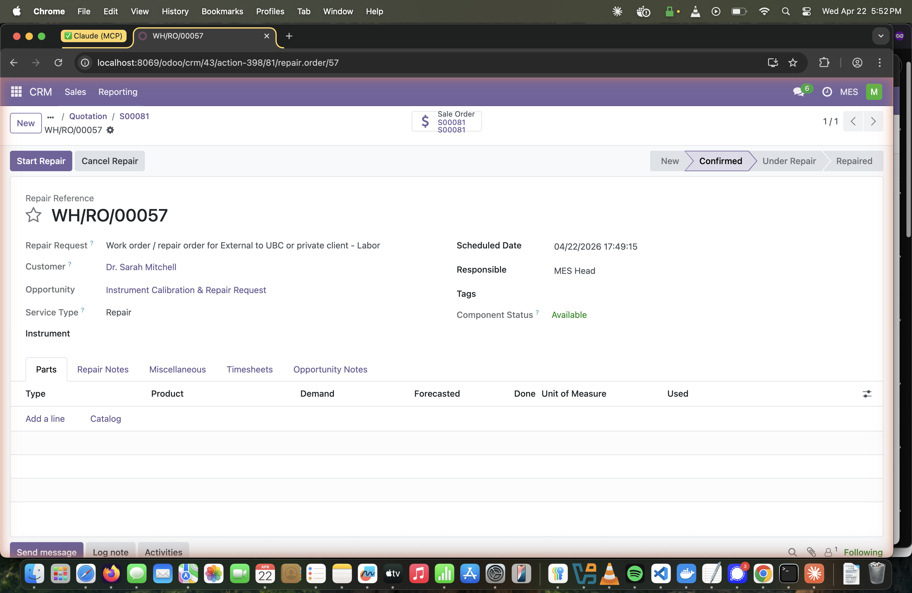
Change the Responsible field to the technician who will carry out the work.
The assigned technician will see this repair order in their own CRM/Repair queue filtered by My Pipeline. They can also log timesheet entries directly from the repair order's Timesheets tab.
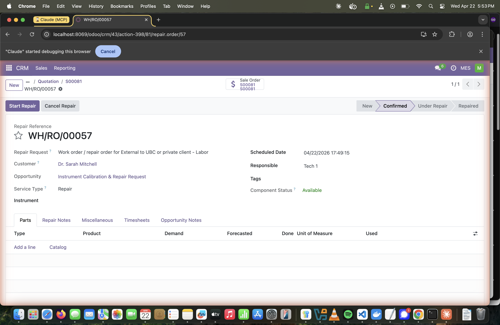
Return to the sales order and generate a draft invoice to be reviewed before posting.
A Manager must validate the worktag before this step succeeds. If the worktag's Validated checkbox is not checked, Odoo will block invoice creation with the error: "worktag has not been validated — a manager must check the Validated field on the worktag first."
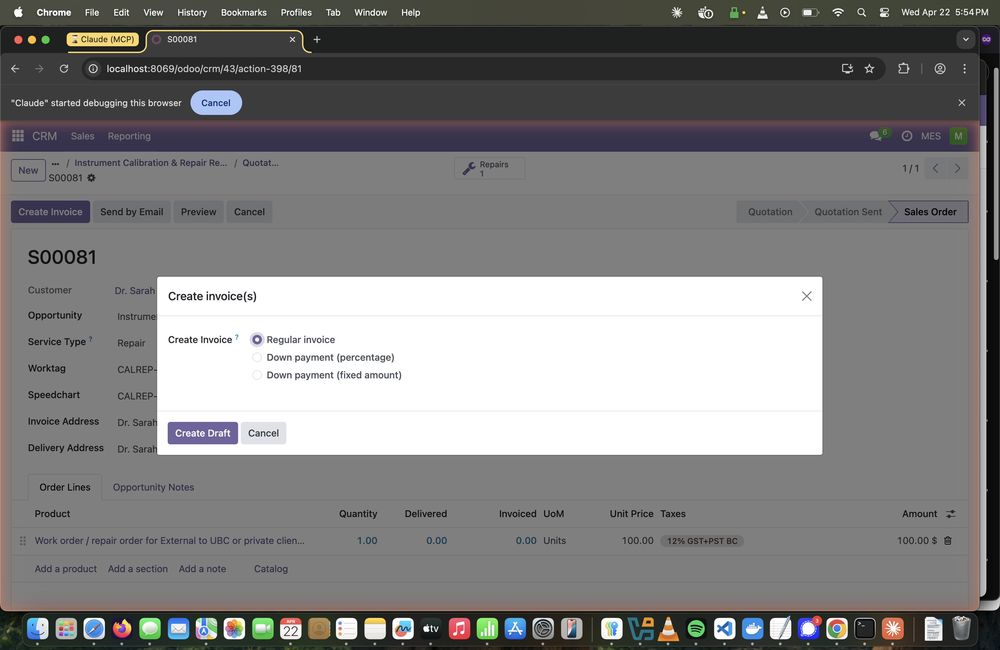
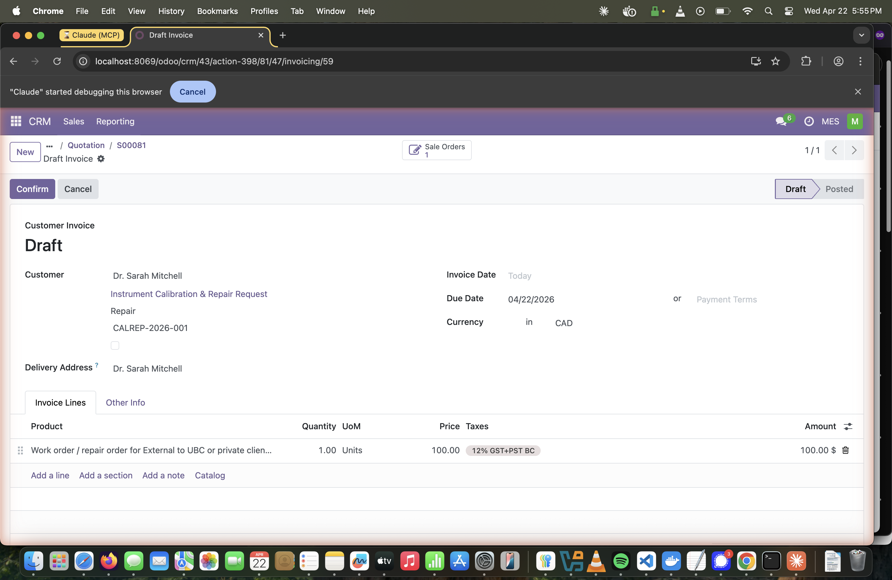
Quick reference for the complete Supervisor workflow sequence.
| # | Action | Location | Key Field / Button |
|---|---|---|---|
| 1 | Login as MES Head | /odoo/login | Email: meshead@chem.ubc.ca |
| 2 | Open CRM Pipeline | CRM → Pipeline | Main menu grid |
| 3 | Create Opportunity | CRM → New (list view) | Opportunity title |
| 4 | Add Contact & Internal Notes | Opportunity form | Contact field → Create and edit… / Internal Notes tab |
| 5 | Create Quotation | Opportunity → New Quotation | New Quotation button |
| 6 | Set Service Type | Quotation form | Service Type dropdown (required) |
| 7 | Select Worktag | Quotation form | Worktag field (auto-fills Speedchart) |
| 8 | Add Labor Product | Quotation → Order Lines tab | Add a product → one of 4 labor products |
| 9 | Confirm → Sales Order | Quotation form | Confirm button |
| 10 | Open Repair Order | Sales Order → Repairs smart button | Repairs N smart button |
| 11 | Assign to Technician | Repair Order form | Responsible field |
| 12 | Create Invoice Draft | Sales Order → Create Invoice | Create Invoice → Create Draft (requires validated worktag) |